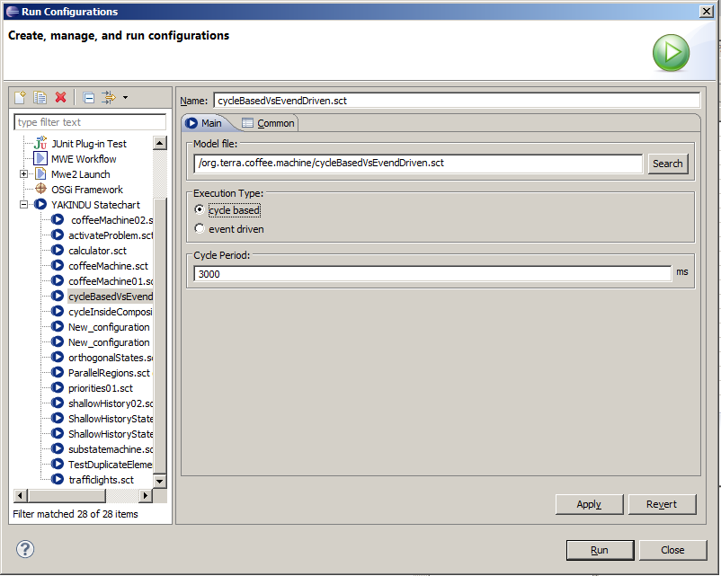

To edit the states and transitions you can use the properties view. It has an integrated Xtext support. This makes correct editing easier. You can also change the appearance of the model elements.
On the palette you will also find a composite submachine state. This is a state that contains a complete statemachine. You can choose an existing statemachine or create a new one.
Statemachine Elements reference
Textual modeling lanuage Reference
The statemachine is validated automatically during build. The elements that cause problems get error markers. You can find the details about the problems on the problems view.
The YAKINDU simulation engine supports simulation modes:
The default setting is cycle based with a cycle period of 200 ms. In this mode the simulation engine processes the state machine transitions in steps of the given cycle duration. The following statechart illustrates this. It is simulated cycle based with a cycle period of 3 seconds.
What happend during simulation is the following:
In contrast to cycle based the event driven simulation mode concentrates on the events of a state machine. The same state machine above could be simulated as follows:
Start a simulation with the different modes as follows

Simulation Concept
Simulation perspective
Simulation View
For code generation, Yakindu Statechart Tools uses a textual generator model called
SGen, that can be used to configure the code generation process. It can be created either by using the provided wizard or by creating a new text file with the file extension ‚.sgen’.
To create a generator model with the wizard,

The result is an .sgen file of the following format:
GeneratorModel for [GeneratorId] {
statechart [StatechartReference] {
feature [Feature] {
[ParameterName] = [ParameterValue]
}
}
}
The [GeneratorId] is the unique id of the Generator. Yakindu Statechart Tools currently supports the following Generators out of the box:
One GeneratorModel can contain several [StatechartReference]s. These are crossreference to statechart models for which the code should be generated.
For each referenced Statechart, the generator process can be configured with [Feature]s. Each Feature consists of several parameters. These parameters can be configured with [ParameterName] = [ParameterValue].
The Generator Model will be build automatically if you checked
Project >
Build Automatically. If you want to execute only one Generator Model, you can select
Generate Statechart Artifacts from the
Package Explorer’s context menu.
The following section describes the Core Features which are available for each Code Generator:
The Outlet feature specifies the target project and folder for the generated artifacts. It is a required feature and consists of the following parameters:
Example configuration:
feature Outlet {
targetProject = "ExampleProject"
targetFolder = "src-gen"
}
The LicenseHeader feature specifies the license text that should be added as a header to the generated artifacts. It is an optinal feature and consists of the following parameters:
Example configuration:
feature LicenseHeader {
licenseText = "Copyright (c) 2012 committers of YAKINDU and others."
}
The
FunctionInlining feature allows the inlining of expressions instead of generating separate functions or methods. This might reduce the readability of the generated code, but increases performance because less operation calls are neccessary.
It is an
optinal feature and consists of the following parameters:
Example configuration:
feature FunctionInlining {
inlineChoices = false
inlineEnterRegion = true
inlineEntries = true
}
The
Naming feature allows the configuration of package names as well as class name prefix / suffix.
It is an
optinal feature and consists of the following parameters:
Example configuration:
feature Naming {
basePackage = "org.yakindu.sct"
implementationSuffix = "Impl"
}
}